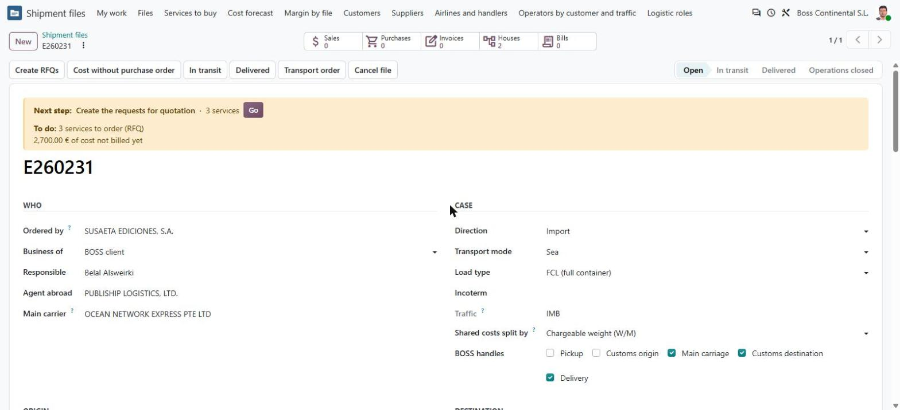
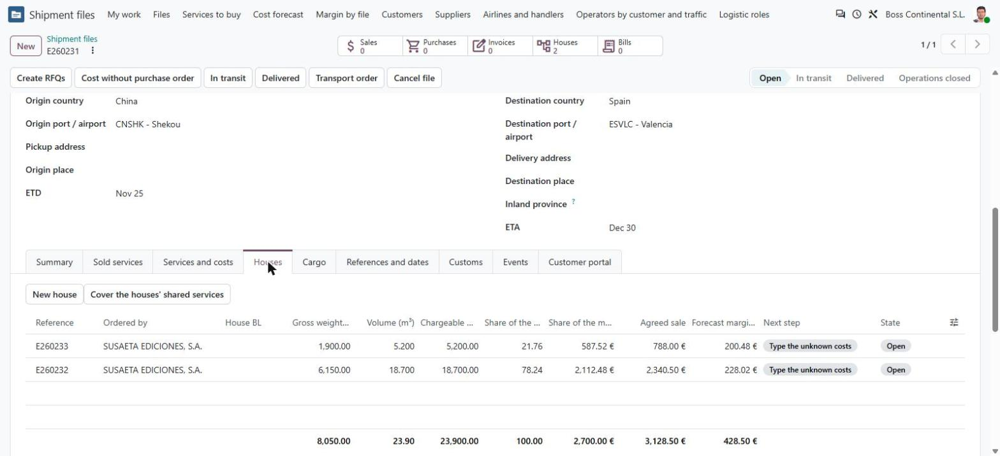
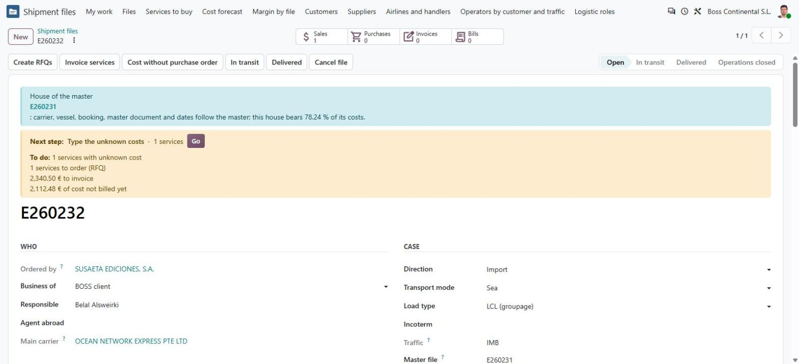

ملخّص بالعربية
ما المشكلة؟ الشحنة المجمّعة = بوليصة رئيسية واحدة (MBL أو MAWB) وتحتها عدة بوالص فرعية (HBL أو HAWB)، كل واحدة لشاحن أو عميل مختلف، ولها جماركها وفاتورتها. في Odoo 20 كان الملف الواحد = بوليصة واحدة، فلم يكن هناك مكان للشحنة المجمّعة.
ماذا كان في Odoo 17؟ الملف (E) يحمل البوليصة الرئيسية والتكاليف المشتركة، وداخله «partidas» (P) لكل بوليصة فرعية: جماركها وبيعها وفاتورتاها. توزيع التكاليف المشتركة بين الـ P كان يدوياً. من 20,792 ملفاً هناك 22,063 partida: أي أن أغلب الملفات فيها partida واحدة فقط، والشحنات المجمّعة قليلة لكنها موجودة (مثل E260468: حاوية واحدة فيها 5 بوالص فرعية لعميل واحد).
ماذا صار في Odoo 20؟ ملف رئيسي (máster) يحمل البوليصة الرئيسية والمشتريات المشتركة، وتحته ملفات فرعية (casas) ملف لكل بوليصة فرعية. بيانات النقل تُنسخ تلقائياً من الرئيسي إلى الفرعية. التكاليف المشتركة تُوزَّع آلياً بالوزن القابل للتسعير (أو الحجم أو بالتساوي أو يدوياً)، ويظهر نصيب كل ملف فرعي في هامشه، ويظهر في الرئيسي الهامش الموحّد للكل. الملف المفرد لم يتغيّر فيه شيء.
تقييمي: مناسب لـ BOSS، لأنه يحفظ طريقة عمل Odoo 17 نفسها (الشراء المشترك على الرئيسي، البيع والجمارك لكل بوليصة) ويزيل العمل اليدوي في التوزيع، ويعيد استخدام كل ما بُني في Odoo 20 دون أن يكسره. ما بقي مفتوحاً: أساس التوزيع (الافتراضي وزن قابل للتسعير، وكريستينا لم تختر بين الوزن الحقيقي والقابل للتسعير)، ومستندات HBL/HAWB والمانيفست، ونقل ملفات Odoo 17 المفتوحة ذات عدة partidas.
1. Qué es una consolidación y cuánto pesa en BOSS
Un máster es el documento del transportista (MBL en mar, MAWB en aire) por el conjunto; cada casa (HBL / HAWB) es el documento de BOSS para un embarcador o un cliente dentro de ese conjunto, con su propia aduana y su propia factura. Pasa en tres casos: la consolidación de comprador (un cliente, varios proveedores en un contenedor), el grupaje LCL (varios clientes en un contenedor de un coloader) y el aéreo consolidado (un MAWB con varios HAWB).
Fuentes: lectura de Odoo 17 el 03/11/2026; correo de Cristina del 28/09/2026 («Explicaciones previsiones» A92–A120); «Nuevo Odoo» › OPS- exptes A27 y A62; ADR-009 §7; Odoo 19 (modelo partida y reparto).
Caso real de Odoo 17: E260468
2. Antes y después
Antes Odoo 20 hasta el 03/11
- Un expediente = una partida. Sin sitio para el máster con varias casas (ADR-009: «no construido»).
- Para consolidar había que abrir varios expedientes que repetían el MBL, el buque y las fechas a mano.
- Los costes compartidos (flete, THC, transporte del contenedor) se repartían a mano entre expedientes, o se cargaban en uno solo (margen falso).
- Odoo 17: el operativo elegía E o P para cada línea; «nunca se sabe dónde vive una línea» (Cristina, A27).
Después Odoo 20 desde el 03/11
- Un expediente máster con sus casas (un expediente por HBL/HAWB). El expediente de siempre no cambia: es un «envío único».
- Naviera, buque, viaje, reserva, MBL/MAWB y fechas se copian del máster a las casas, y vuelven a copiarse a cada cambio (solo lectura en la casa).
- Los costes compartidos se compran una vez en el máster y se reparten solos entre las casas: peso tasable (W/M), peso bruto, volumen, partes iguales o a mano. Las partes suman 100.
- Cada casa ve su margen con su parte del máster; el máster ve el margen consolidado.
- Cada ítem tiene un único sitio: lo compartido en el máster, lo de cada casa en su casa (lo que pedía Cristina).
3. Cómo queda el modelo
| Qué | Máster | Casa |
|---|---|---|
| Guarda | MBL / MAWB, naviera, buque, reserva, fechas, contenedores; las compras compartidas; la base de reparto | Su cliente, oferta y líneas de venta; embarcador y consignatario; HBL / HAWB y su liberación; carga y pesos; aduana; recogida y entrega; sus compras (despacho, derechos); sus facturas; su parte (%) |
| Datos de transporte | Se teclean aquí | Copiados del máster, solo lectura, se vuelven a copiar a cada cambio |
| Compras | Se piden una vez | Lo que compra el máster queda «comprado en el máster» (no se pide dos veces); la casa soporta su % del coste del máster, previsto y facturado |
| Cifras | Las suyas + vista consolidada: venta de las casas, sus costes propios, margen consolidado | Venta − (costes propios + parte del máster) = margen de la casa |
| Estados | «En tránsito» en el máster pasa las casas a tránsito | «Entregado» por casa, con sus condiciones (paso 5) |
| Cierre económico | Solo cuando todas las casas están cerradas | Espera a los costes del máster (su parte cuenta como «coste sin factura») |
| Siguiente paso | Nunca «vincular la oferta» (un máster no vende por sí mismo) | Como cualquier expediente |
4. Cómo se trabaja (en pantalla)
- Abrir el máster: un expediente nuevo con el caso y la ruta, la naviera, el MBL/MAWB, el contenedor; en «Servicios y costes» las compras compartidas (flete, THC, transporte). Puede abrirse antes de ninguna oferta (prealerta).
- Casas: cada oferta aceptada abre su expediente; en él se pone «Expediente máster». O desde la pestaña «Casas» del máster, «Nueva casa» abre una casa con el mismo caso y ruta, ya vinculada.
- Al vincular: la casa recibe naviera, buque, reserva, MBL y fechas; sus servicios que el máster compra pasan a «comprado en el máster»; su parte (%) se calcula con la base del máster.
- Operar: pedidos de compra en el máster; «En tránsito» en el máster; aduana, entrega y factura en cada casa, con el «Siguiente paso» de cada una.
- Cerrar: cada casa cierra operaciones y, cuando el máster tiene sus facturas, cierra económicamente; el máster cierra el último, con el margen consolidado.



5. Por qué así y no de otra forma
Opción elegida (A): máster con casas
- Reutiliza todo lo construido por expediente: aduana (paso 5), condiciones de entrega, factura por cliente, siguiente paso, margen, portal, documentos.
- Cada cosa en un único sitio (Cristina, A27 y A62).
- Varios clientes en un grupaje: una casa por cliente con su oferta, su factura y su acceso al portal.
- Es el modelo del sector: CargoWise (consol → shipments), Linbis (máster → houses, datos que bajan del máster), las apps de flete de Odoo (Direct / Master / House).
- Conserva la práctica de Odoo 17: compras compartidas en el E, venta y aduana por P, una factura por P. Lo nuevo es que el reparto se calcula y se explica.
Opción descartada (B): partida dentro del expediente
- Es la forma de Odoo 17 y de Odoo 19, pero obligaría a mover la aduana, la facturación, los documentos y el margen a un nivel nuevo (tamaño XL en el plan F16) y tocaría el flujo de los expedientes de una sola casa, que son más del 90 %.
- La jornada LCL de Odoo 19 con Flor nunca se cerró.
Coste aceptado de A
- Una consolidación son dos o más registros en vez de una página; la pestaña «Casas» del máster los lista con sus cifras y su siguiente paso.
- La casa repite algunos campos del máster (copiados, solo lectura).
6. Pruebas y evidencia
Lo comprobado: máster con un 40' y tres compras compartidas; dos casas de dos clientes vendidas por W/M; copia y recopia de los datos de transporte; servicios compartidos cubiertos y aduana propia conservada; partes por peso tasable (66,67 / 33,33), iguales (50 / 50) y manuales (70 / 30) que suman 100; la parte en el coste, el margen y la explicación de cada casa; la vista consolidada del máster; tránsito conjunto; una factura por cliente; los dos cierres económicos rechazados en el orden equivocado; una casa no puede ser máster; «Nueva casa»; un expediente único sin cambios. Evidencias en docs/evidencias/20261103_1610_*.
7. Valoración: ¿encaja en BOSS?
Sí, con reservas pequeñas. Cubre los tres casos reales (consolidación de comprador como E260468, grupaje LCL con varios clientes, aéreo consolidado) sin cambiar nada para el expediente de una casa. Quita el trabajo manual que Cristina y el equipo hacían en Odoo 17 (repetir datos del máster, repartir el flete a mano, decidir dónde va cada línea) y deja el margen por casa y el consolidado a la vista, que es lo que el sector llama «P&L por HBL».
Reservas (ninguna bloquea el uso):
- Base del reparto. Por defecto peso tasable (W/M), como cobran las navieras; Cristina nunca eligió entre peso real y tasable (Odoo 19 tampoco). Está a un clic en el máster y queda registrado quién lo cambió.
- Despacho más barato por casa (Cristina A120, «comprobar con Laura»): es un precio de venta por casa, no una regla; se pondrá en la lista de precios cuando Laura lo confirme.
- Contabilidad analítica. La parte del máster es una cifra de la casa (su margen), no un asiento en las facturas del máster; si Ángel quiere el reparto en el libro, se hará con distribuciones analíticas.
- Pendiente de construir: documentos HBL/HAWB y manifiesto de carga (F0-C45), página del portal para una consolidación, migración de los expedientes de Odoo 17 abiertos con varias partidas (F0-C74).
8. Fuentes
- Cristina, correo 28/09/2026: «Plan detallado previsiones» › Explicaciones previsiones A92, A93, A113–A120; «Nuevo Odoo» › OPS- exptes A27, A39, A62, A73; hoja «partidas».
- Odoo 17 (lectura 03/11/2026): x_dashboard, x_partidas, x_lines; expediente E260468 y sus cinco partidas; volúmenes de e2e_plan_research.json.
- Odoo 19: boss_shipments/partida.py, boss_pricing/pricing_allocation.py (métodos de reparto), BOSS_REPORTS_DECISIONS D3.
- Odoo 20: ADR-009 revisión 2 §7 (opciones A y B), decisiones-f0 F0-C30 y M2-I, paquete 7; ADR-013 (esta decisión).
- Sector: CargoWise (consol, «Apportion To Consols»), Linbis (máster → houses), apps de flete de Odoo (Direct / Master / House), guías LCL (reparto por W/M).